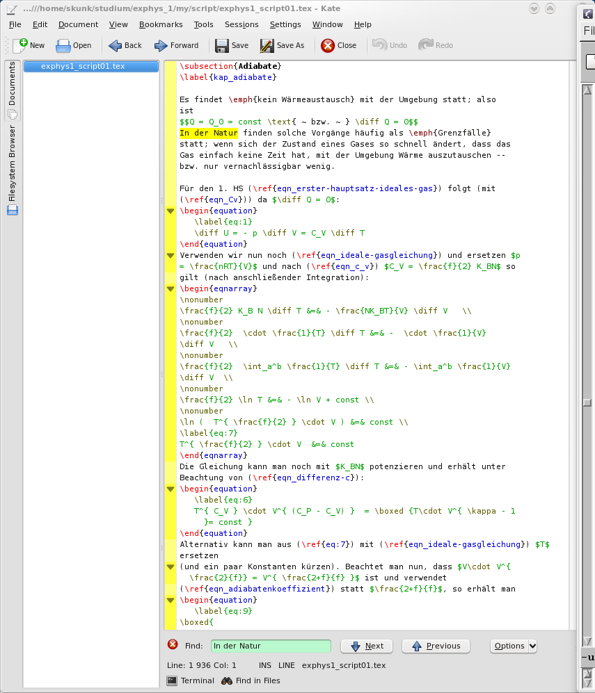
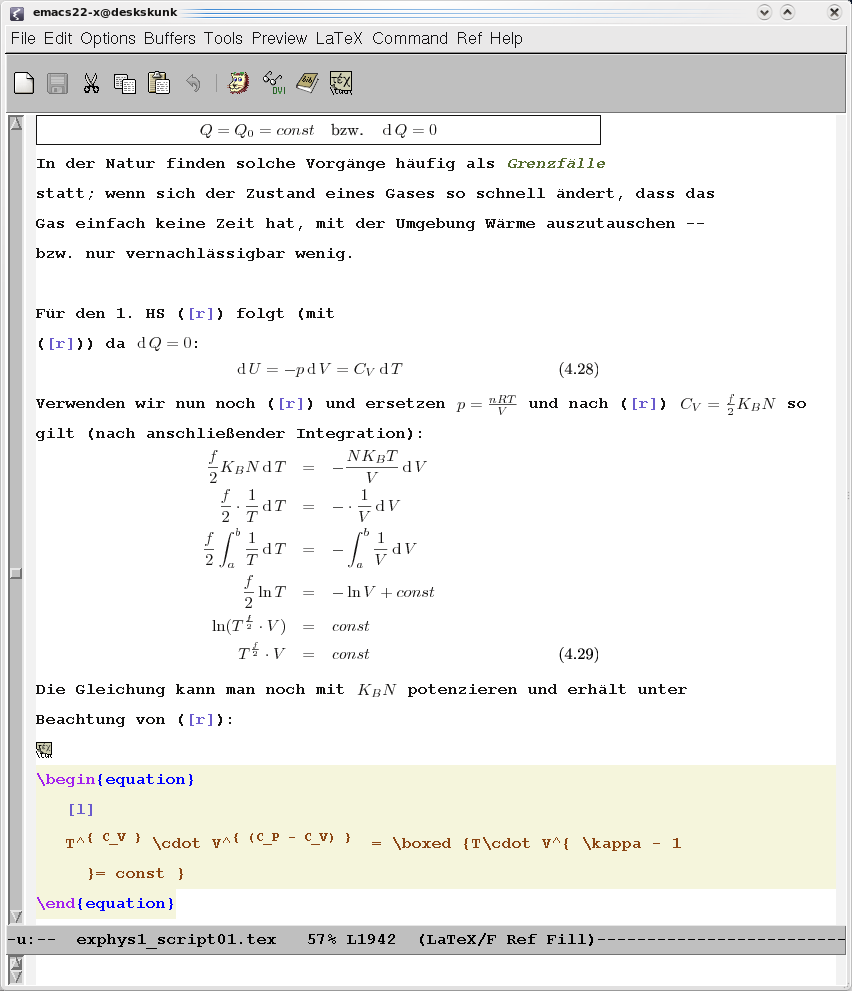

Ich habe brav aus den Linux-Quellen den Code von Emacs22 (die
X-Server-version) bezogen und installiert.
Danach braucht man noch das Packet auctex und preview-latex.
Templates ist etwas schwerer zu bekommen und erfordert etwas Handarbeit.
Siehe dazu die Installationsanleitung im Anhang. Zu bekommen ist das komplette
Packt unter http://emacs-template.sourceforge.net/.
Damit kann man eine praktisch WYSIWYG Darstellung erhalten. Macht den Code schön übersichtlich. Zum Aktivieren (oder Deaktivieren)
C-c C-o C-f
eingeben. Um dann das Dokumen zu folden
C-c C-o C-b
Oder nur für eine Region
C-c C-o C-r
Hierfür preview-latex zuständig. Um die Funktion zu aktivieren einfach
C-c C-p C-d
einzugeben, damit im ganzen Dokument die Formeln und Bilder durch Vorschauen ersetzt werden.
So sieht das mit Kate uns Syntax-Highlighting aus:

Und so mit emacs mit code-folding und preview-latex:

Ganz unten habe ich auf eine equation geklickt -- um sie zu bearbeiten.
Ein Inhaltsverzeichnis öffnet man mit
C-c =
und kann hier mit n und p nach oben / unten navigieren. Mit
<Leertaste>
Springt man an die entsprechende Stelle, um sie sihc anzusehen und mit
<Enter>
springt man an die Stelle und die Inhaltsangabe schließt sich.
Mit
<
bzw
>
kann man die Einträge in der Hierarchie hoch- bzw. herunterstufen.
Betätigt man
f
so bewegt der Cursor im Text sich mit dem Cursor im Inhaltsverzeichnis-buffer mit.
Um das vorangegabgene Wort in \index{Wort}Wort umzuwandeln, einfach auf das
Wort gehen und
C-c /
eingeben. Um noch ein wenig präziser den Indexeintrag anzugeben, kann man
C-u C-c /
verwenden.
Das Programm RefTeX ist auch dafür verantwortlich, dass in jedem Ordner, in
dem man die LaTeX-Dateien bearbeitet ein Ordner auto angelegt wird. Hierin
befindet sich eine Liste der benutzten Labels und man kann mit diesen bequem
zum gewünschten navigieren.
Gibt man über C-c C-m den Befehl \ref ein, kommt man in ein Menü, in dem
man zum passenden label scrollen kann und dieses auswählen kann. Um sich den
Aufwand zu sparen, kann man auch einfach C-c ) drücken. Das Programm erkennt
sogar, wenn man vorher Gl. oder Abb. geschrieben hat und findet so
automatisch nur eben Formeln oder Bilder.
Um sich Tipparbeit zu sparen, habe ich mir eigene Tastenkürzel entworfen; hier eine Auswahl:
\fraction{}{}
\operatorname (also bspw. um Einheiten in equations in passender
Schrift zu setzen).
Auch noch ganz nett, wenn auch nicht von mir: Das Auskommentieren. Mit
C-SPACE Marke setzen und und mit C-c ; am Ende wird der gesamte Bereich
auskommentiert.
Hier meine eigene ~/.emacs: Ich habe sie dahingegen modifiziert, das man
damit besser LaTeX-Dokumente bearbeiten kann. Sie sorgt u.a. für:
ß
;; ;; Templates - Unterstuetzung ;; ;;
;; ;; Mit template 3.1 ;; ;;
(setq load-path (cons (expand-file-name "~/.emacs.d/lisp") load-path))
(require 'template)
(template-initialize)
;; ;; RefTex ;; ;;
;; Fuer Navigation im LaTeX Dokument ;;
;; Soll mit aucTeX zusamenarbeiten:
(setq reftex-plug-into-AUCTeX t)
;; Soll zusammen mit AUCTex aktiviert werden:
(add-hook 'LaTeX-mode-hook 'turn-on-reftex)
(custom-set-variables
;; custom-set-variables was added by Custom.
;; If you edit it by hand, you could mess it up, so be careful.
;; Your init file should contain only one such instance.
;; If there is more than one, they won't work right.
'(LaTeX-babel-hyphen "--")
'(LaTeX-eqnarray-label "eqn_")
'(LaTeX-equation-label "eqn_")
'(LaTeX-figure-label "abb_")
'(LaTeX-indent-level 3)
'(LaTeX-item-indent -3)
'(LaTeX-section-label (quote (("part" . "part_") ("chapter" . "kap_")
("section" . "kap_") ("subsection" . "kap_") ("subsubsection" . "kap_"))))
'(LaTeX-table-label "tab_")
'(inhibit-startup-screen t)
'(reftex-derive-label-parameters (quote (5 50 t 1 "-" ("der" "die" "das" "eine"
"einer" "eines" "wie" "wo" "wann" "warum") t)))
'(reftex-section-prefixes (quote ((0 . "part_") (1 . "kap_") (t . "kap_")))))
(custom-set-faces
;; custom-set-faces was added by Custom.
;; If you edit it by hand, you could mess it up, so be careful.
;; Your init file should contain only one such instance.
;; If there is more than one, they won't work right.
)
;; ;; Fonts ;; ;;
;;
;; Courrier new
(set-default-font "-monotype-courier new-demibold-r-*-*-16-*-*-*-*-*-*-*")
;;Die Zahl (an 7. Stelle) gibt die Schriftgroesse an
;;
;;Arial
;;(set-default-font "-monotype-arial-bold-r-*-*-*-*-*-*-*-*-*-*")
;;
;; ;; Auto Fill mode
;;
(setq text-mode-hook 'turn-on-auto-fill)
;; ;; LaTeX Math mode
;;
;; Prefix um Mathesymole einzugeben:
(setq LaTeX-math-abbrev-prefix "ß")
;; ;; Gepaarte Klammern automatisch finden ;; ;;
;; zu jedem Klammer-Auf wird das passende Klammer-Zu
;; und umgekehrt hervorgehoben, wenn der Cursor
;; auf bzw. hinter einem der beiden steht.
;; http://tpoly2.physik.uni-freiburg.de/
;; Einfuehrung/Emacs.19.html
;; (load "paren")
(show-paren-mode t)
;; (setq blink-matching-paren t)
;; (setq blink-matching-delay 1)
;;
;; ;; EIGENE MAKROS ;; ;;
;;
;; ;; Für LaTeX ;;
;;
;; Es kann sein, dass ein Befehl nicht so funktioniert, wie
;; er eigentlich sollte. Das kann dann daran liegen, dass
;; ein Systemeigener Befehl schon den selben Namen hat.
;; Das Problem loest man, indem man die Befehlsnamen anders
;; waehlt: `myLaTeX' statt `LaTeX' usw.
;;
;; Bruch einfuegen
(defun myLaTeX-math-fraction()
(interactive)
(insert "\\frac{}{}")
(backward-char 3)
)
;; Skalarproduktklammern einfuegen
(defun LaTeX-math-skalprod()
(interactive)
(insert "\\langle \| \\rangle")
(backward-char 11)
)
(defun LaTeX-math-operatorname()
(interactive)
(insert "\\operatorname{}")
(backward-char 1)
)
(defun LaTeX-math-sqrt()
(interactive)
(insert "\\sqrt\{\}")
(backward-char 1)
)
(defun LaTeX-math-unten()
(interactive)
(insert "\_\{\}")
(backward-char 1)
)
(defun LaTeX-math-oben()
(interactive)
(insert "^\{\}")
(backward-char 1)
)
(defun LaTeX-math-partiell()
(interactive)
(insert "\\frac{\\partial }{\\partial }")
(backward-char 12)
)
(defun LaTeX-math-total()
(interactive)
(insert "\\frac{\\diff }{\\diff }")
(backward-char 9)
)
(defun myLaTeX-math-text()
(interactive)
(insert "\\text{}")
(backward-char 1)
)
(defun myLaTeX-math-klammern()
(interactive)
(insert "\\left ( \\right )")
(backward-char 9)
)
(defun myLaTeX-math-epsilon()
(interactive)
(insert "\\varepsilon")
(backward-char 0)
)
;; Den Befehlen (oben) Tastenkuerzel zuweisen
(add-hook 'LaTeX-mode-hook
(lambda ()
(define-key LaTeX-mode-map "\C-cf" 'myLaTeX-math-fraction)
(define-key LaTeX-mode-map "\C-cs" 'LaTeX-math-skalprod)
(define-key LaTeX-mode-map "\C-co" 'LaTeX-math-operatorname)
(define-key LaTeX-mode-map "\C-cw" 'LaTeX-math-sqrt)
(define-key LaTeX-mode-map "\C-cn" 'LaTeX-math-unten)
(define-key LaTeX-mode-map "\C-cm" 'LaTeX-math-oben)
(define-key LaTeX-mode-map "\C-cb" 'LaTeX-math-partiell)
(define-key LaTeX-mode-map "\C-ca" 'LaTeX-math-total)
(define-key LaTeX-mode-map "\C-ct" 'myLaTeX-math-text)
(define-key LaTeX-mode-map "\C-ck" 'myLaTeX-math-klammern)
(define-key LaTeX-mode-map "\C-ce" 'myLaTeX-math-epsilon)
)
)
;; Um einen Befehl global zu aktivieren:
;; (global-set-key "\C-cf" 'LaTeX-math-fraction)
### INSTALL for template.el: Template Package for Emacs
## Copyright 2002 Free Software Foundation, Inc.
##
## Author: Christoph Wedler <wedler@users.sourceforge.net>
## Keywords: Emacs, template, comment decoration, auto-updating, data, tools
## X-URL: http://emacs-template.sourceforge.net/
The installation process with explanations (all files mentioned here are
relative to top-level directory "template/" in the distribution):
1. Copy file "lisp/template.el" to your load-path. That means:
Use C-h v load-path RET to check the value and the documentation of
Emacs' load-path.
You must copy "lisp/template.el" to one of the directories in the
value list. If no directory in the default value is appropriate, you
must add "your own" directory to that list.
The cases:
(a) You want to copy the file to DIR, i.e., one of the listed
directories: copy "lisp/template.el" to DIR.
(b) You use Emacs and install Template in your home directory:
create directory "~/.emacs.d/lisp/" and copy "lisp/template.el"
to it. Add the following lines at the beginning of your Emacs
init file:
(setq load-path (cons (expand-file-name "~/.emacs.d/lisp")
load-path))
(c) You use XEmacs-20.3 or higher and install Template in your
home directory: create directory
"~/.xemacs/xemacs-packages/lisp/". It will be automatically
added to `load-path' if you start XEmacs the next time.
(d) You install Template system-wide: the target directory is
"EMACS/site-lisp/" or "XEMACS/site-packages/lisp/". But you
probably know that if you are responsible for Emacs or XEmacs
on your site.
2. Byte-compile file "template.el": visit file "template.el" (that is,
the copy) and use menu entry
"Emacs-Lisp"/"Lisp" >> "Byte-compile This File"
or
M-x byte-compile-file RET template.el RET.
Note: during compilation, you get warnings about missing functions.
You can ignore them, since these functions will not be used in the
Emacs/XEmacs branch or version you are using.
3. Visit your Emacs init file.
- The Emacs init file is usuall file "~/.emacs".
- In XEmacs-21.4 or higher, it is usually "~/.xemacs/init.el".
- For a system-wide installation, the init file is "default.el".
Add the following lines into your init file (it should be inserted
after the lines from case 1b):
(require 'template)
(template-initialize)
4. You might want to copy the template files "templates/*.tpl" to
"~/.templates/" and change them according to your preferences.
### INSTALL ends here